NumbahWan
搞笑中央
非政治宣傳
Join Freely
非政治宣傳
Join Freely
總書記
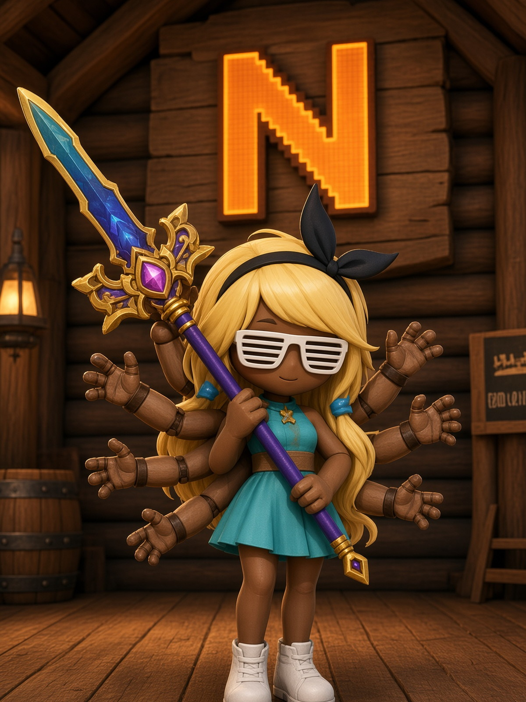
第一屆
大會
認證
大會
認證
12 · 24 · 第一屆
NumbahWan
第一屆
中央大會
公會公告：Numbahwan第一屆中央大會 12月24日。到場算黨性；缺席自己跟總書記講。
紅光亮 parody · 向上仰望總書記 · $ 權杖反諷 ON 紅底
中央委員 · 紅場肖像
金框半身 · 職銜三角旗 · 24 張臉對齊 grok.me 能量，但場地是 SUPER RED 海報不是暗黑 UI。
-
總書記RegginA
-
中央政委
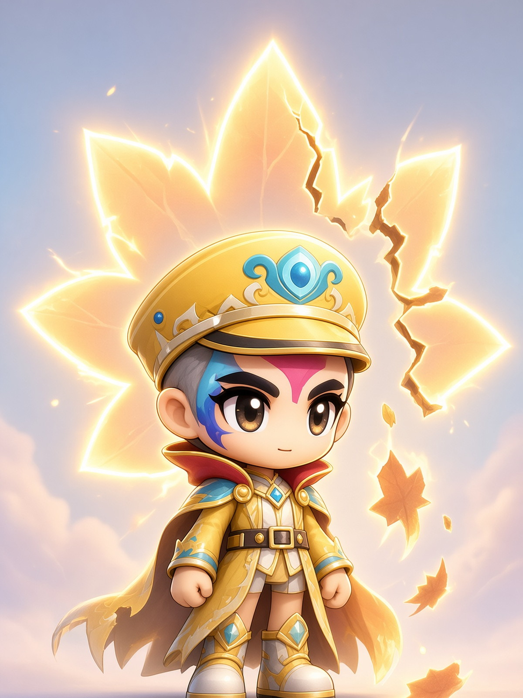
Belive -
黨員阿光Yo
-
黨員碼農小孫
-
黨員TZXIA2
-
黨員
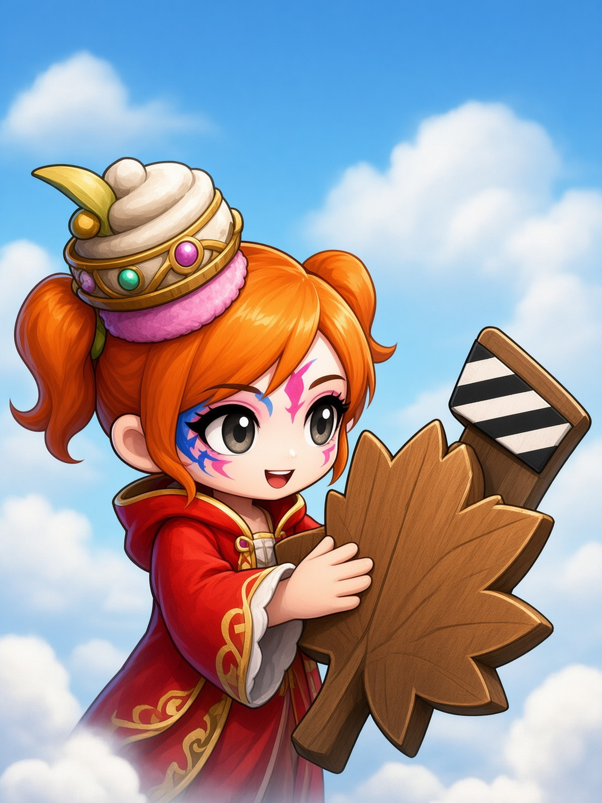
怎麼鈕承澤樣 -
預備黨員
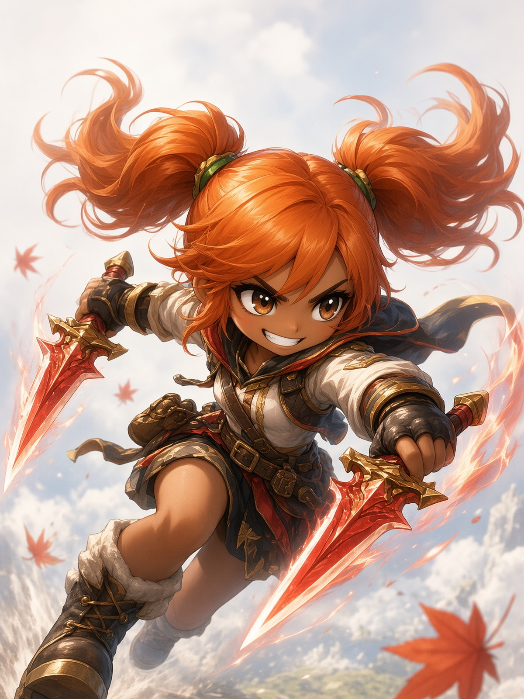
MaNiojoja -
預備黨員
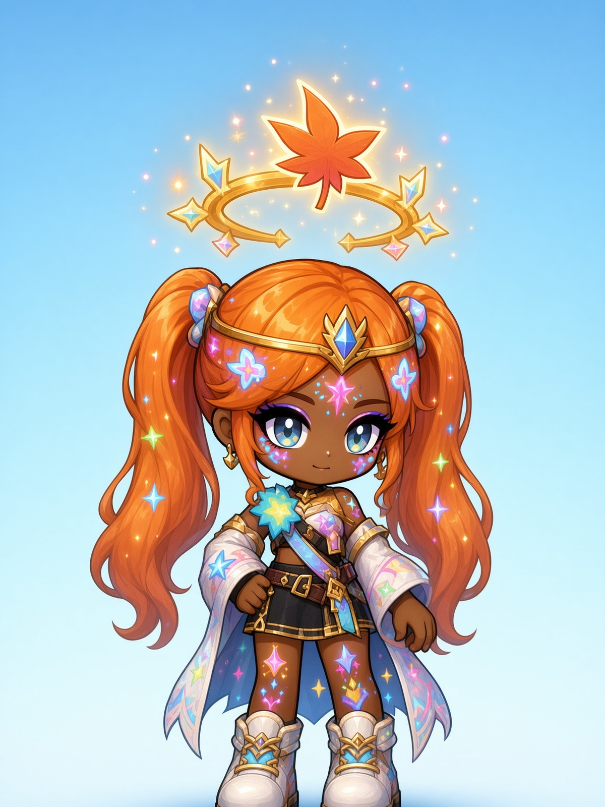
Gawd -
黨員
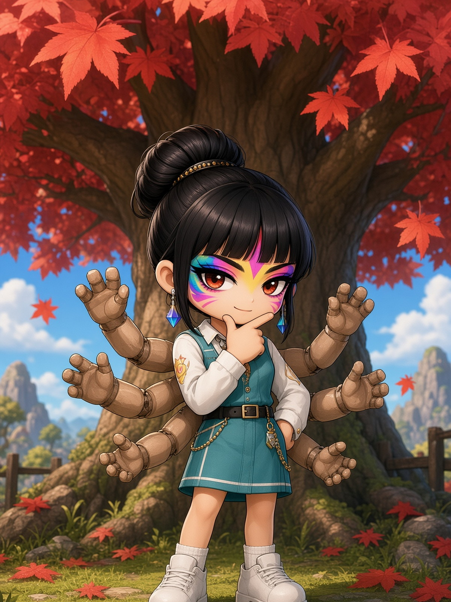
帥葛葛 -
黨員萬濤*
-
黨員雨露*
-
黨員
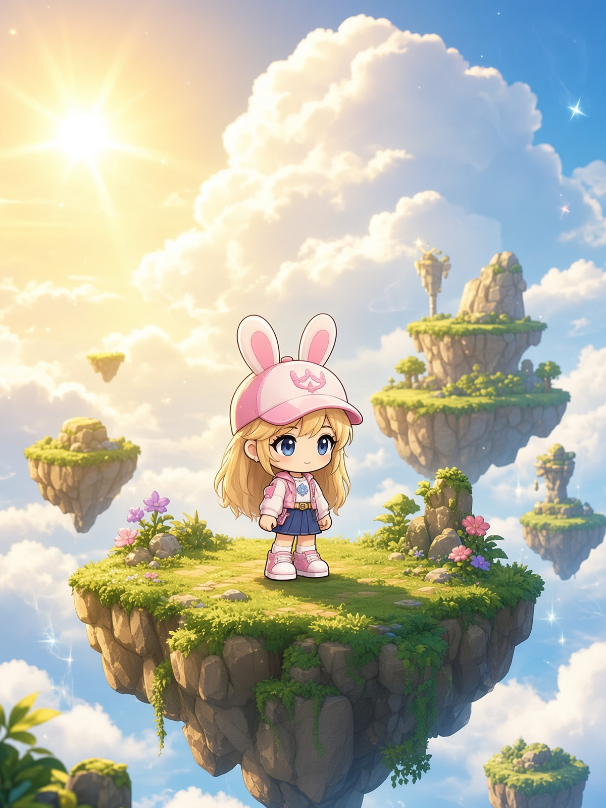
雨露青* -
黨員傻瓜*
-
黨員Neila*
-
黨員QueenK*
-
黨員
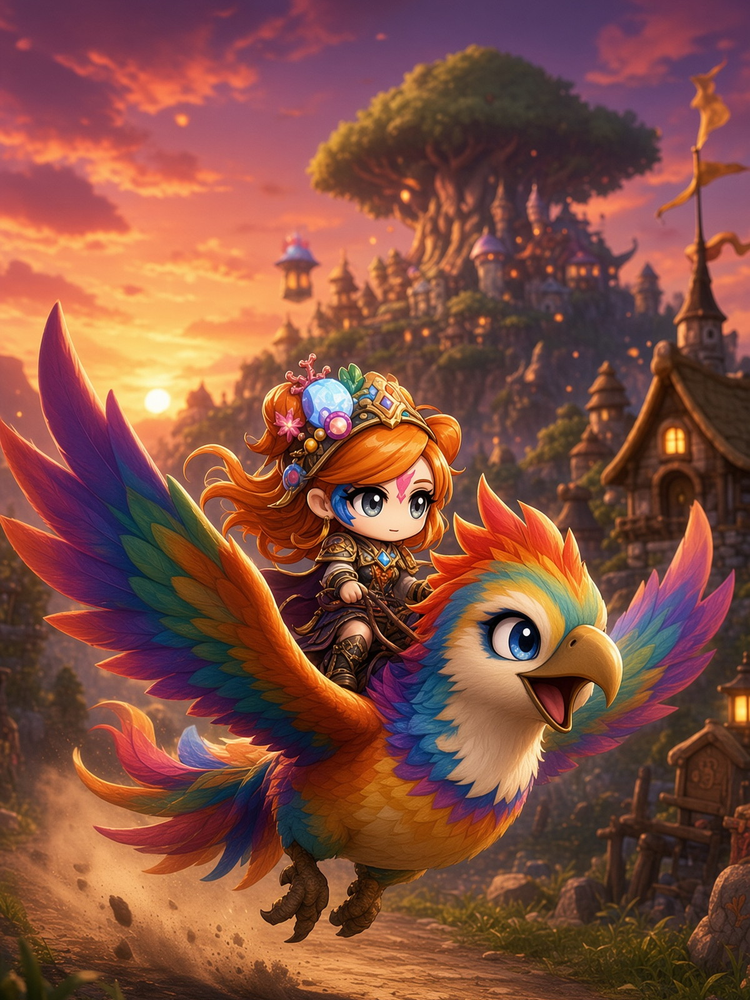
Q鳥* -
黨員黑騎*
-
黨員
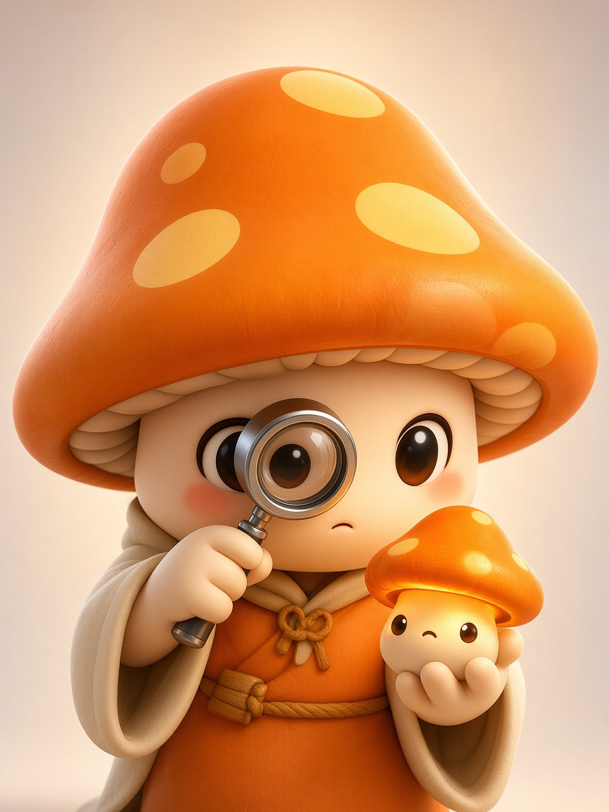
固寧* -
黨員
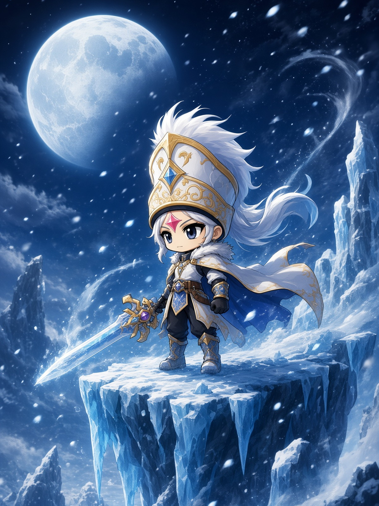
冰封* -
黨員雷雨*
-
預備黨員
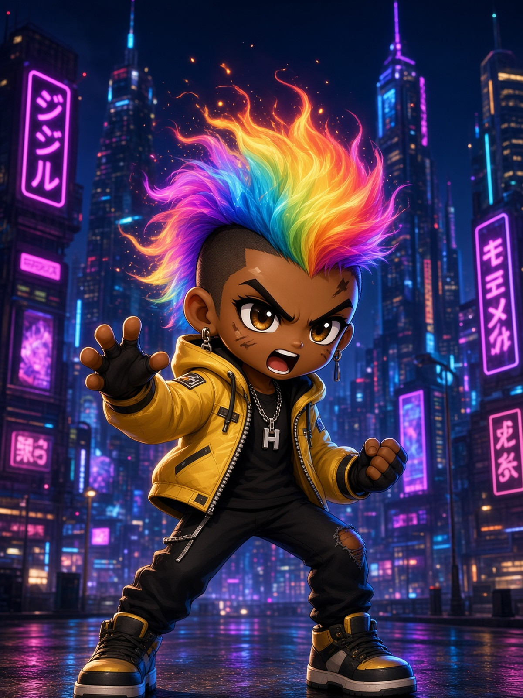
Niojojer* -
預備黨員TIS36*
-
黨員RegginO*
-
黨員
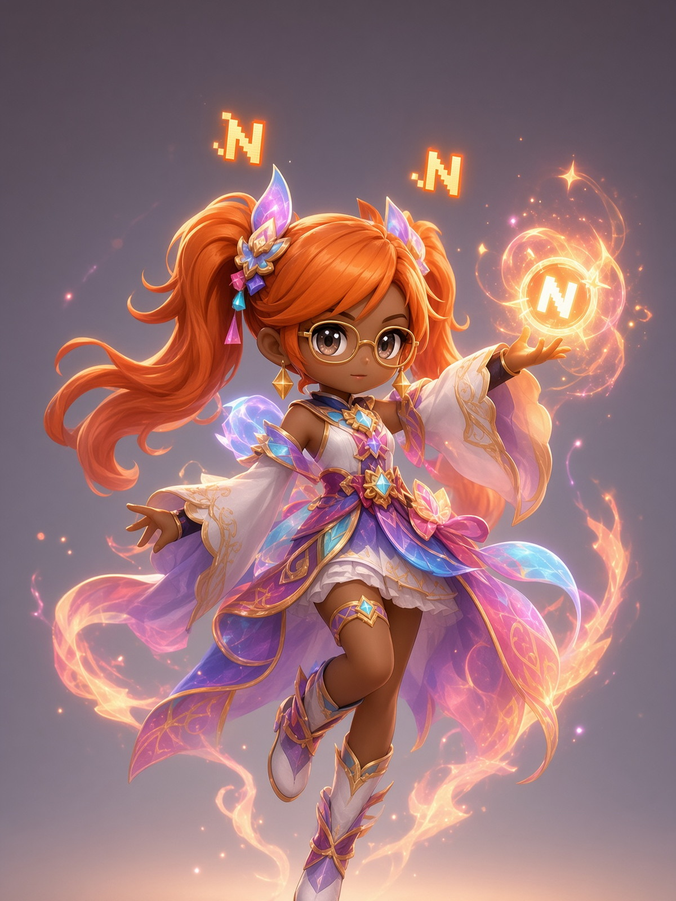
RegginKrad*
* 標記者：名字從公會站檔名／頁面推斷，僅作席位標籤。貢獻榜 白two／小白two／小白1 等見遊戲截圖 refs。肖像亦見於 numbahwanguild.grok.me（fair beat）。
12月24日 · Join Freely
想來就來。笑完上線；大會帶角色，不帶綱領。